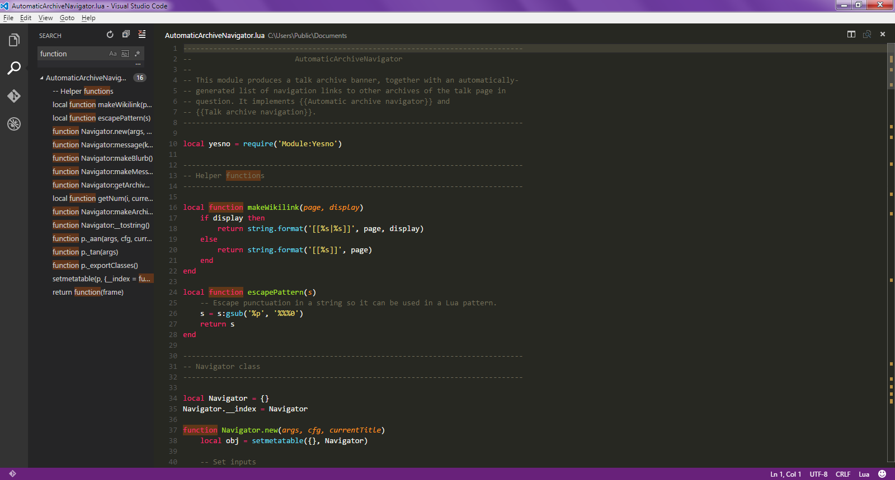
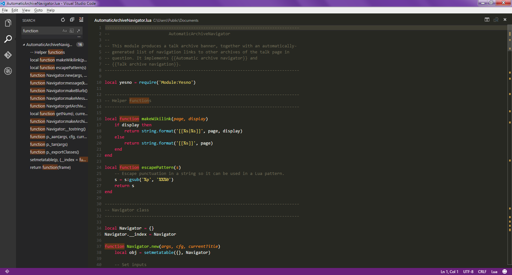

Présentation
Visual Studio Code est un éditeur de code extensible développé par Microsoft pour Windows, Linux et macOS1.
Visual Studio Code est présenté lors de la conférence des développeurs Build d'avril 2015 comme un éditeur de code multi-plateforme, open source et gratuit, supportant une dizaine de langages2.
Il est basé sur Electron, une structure utilisée pour déployer des applications Node.js pour le bureau exécuté sur le moteur Blink. Bien qu'il utilise le framework Electron, le logiciel n'utilise pas Atom mais utilise le même composant éditeur (nommé "Monaco") utilisé dans Azure DevOps (anciennement appelé Visual Studio Online et Visual Studio Team Services).
Le code source est fourni sous la licence libre MIT (plus précisément la licence MIT) sur le site du projet sur Github. En revanche, l'exécutable est proposé sur le site officiel de Microsoft sous une licence propriétaire.
 

Ses fonctionnalités

L’éditeur Visual Studio fournit de nombreuses fonctionnalités facilitant l’écriture et la gestion de votre code et de votre texte. Vous pouvez développer et réduire différents blocs de code en utilisant le mode Plan. Vous pouvez obtenir plus d’informations sur le code en utilisant IntelliSense, l’Explorateur d’objetset la hiérarchie d’appels. Vous pouvez rechercher du code en utilisant des fonctionnalités telles que Atteindre, Atteindre la définition et Rechercher toutes les références. Vous pouvez insérer des blocs de code à l’aide d’extraits de code et vous pouvez générer du code en utilisant des fonctionnalités telles que Générer à partir de l’utilisation. Si vous n’avez jamais utilisé l’éditeur Visual Studio, consultez apprendre à utiliser l’éditeur de code.
Vous pouvez afficher votre code de différentes façons. Par défaut, l’Explorateur de solutions affiche votre code organisé par fichiers. Pour afficher votre code organisé par classes, cliquez sur l’onglet Affichage de classes situé en bas de la fenêtre.
Vous pouvez rechercher et remplacer du texte dans un ou plusieurs fichiers.
Vous pouvez utiliser des expressions régulières pour rechercher et remplacer du texte.
Les différents langages de Visual Studio offrent différents ensembles de fonctionnalités et, dans certains cas, les fonctionnalités se comportent différemment dans les différents langages. Un grand nombre de ces différences sont spécifiées dans les descriptions des fonctionnalités.
Couleurs de syntaxe
Certains éléments de syntaxe des fichiers de code et de balisage apparaissent dans des couleurs différentes pour que vous puissiez les distinguer. Par exemple, les mots clés (tels que using en C# et Imports en Visual Basic) apparaissent dans une couleur, alors que les types (tels que Console et Uri) sont d’une autre couleur. D’autres éléments de syntaxe sont également colorés, tels que les commentaires et les littéraux de chaîne. C++ utilise la couleur pour différencier les types, les énumérations et les macros parmi les autres jetons.
Marques d’erreur et d’avertissement
Quand vous ajoutez du code et générez votre solution, vous pouvez voir s’afficher (a) des soulignements ondulés de différente couleur (les tildes) ou (b) des ampoules dans votre code. Les soulignements ondulés rouges indiquent des erreurs de syntaxe, les soulignements ondulés bleus indiquent des erreurs de compilateur, les soulignements ondulés verts indiquent des avertissements et les soulignements ondulés violets indiquent d’autres types d’erreur. Les actions rapides suggèrent des solutions aux problèmes rencontrés et facilitent la correction des erreurs.
Personnaliser l’éditeur
Vous pouvez partager vos paramètres Visual Studio avec un autre développeur, rendre vos paramètres conformes à une norme ou rétablir les paramètres par défaut de Visual Studio à l’aide de la commande Assistant Importation et exportation de paramètres du menu Outils. Dans l’Assistant Importation et exportation de paramètres, vous pouvez changer des paramètres généraux sélectionnés ou des paramètres spécifiques à un langage ou à un projet.
Refactorisation
La refactorisation inclut des opérations telles que le renommage intelligent des variables, l’extraction d’une ou plusieurs lignes de code dans une nouvelle méthode, le changement de l’ordre des paramètres de méthode, et bien plus encore.
Support des langages
Visual Studio Code prend immédiatement en charge presque tous les principaux langages de programmation. Plusieurs d'entre eux sont inclus par défaut, par exemple JavaScript, TypeScript, CSS et HTML, mais d'autres extensions de langage peuvent être trouvées et téléchargées gratuitement à partir de VS Code Marketplace.


Edition
Visual Studio est disponible pour Windows et Mac. Visual Studio pour Mac compte de nombreuses fonctionnalités en commun avec Visual Studio 2019, et est optimisé pour le développement d’applications mobiles et multiplateformes. Cet article traite essentiellement de la version Windows de Visual Studio 2019.
Il existe trois éditions de Visual Studio 2019 : Community, Professional et Enterprise. Consultez comparer les éditions de Visual Studio pour en savoir plus sur les fonctionnalités prises en charge dans chaque édition.